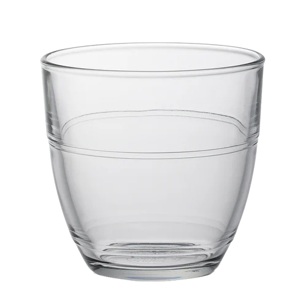

|
 |
|---|
LE VIN ... c'est bon...
Mais le vin c'était pas "politiquement correct"
|
|
|---|
Fier de ses acomplissement et de ses batailles victorieuses, la légende des salles à manger et des cantines enragées...
 |
Le verre GOAT |
|---|---|
|  | Le Gigogne |